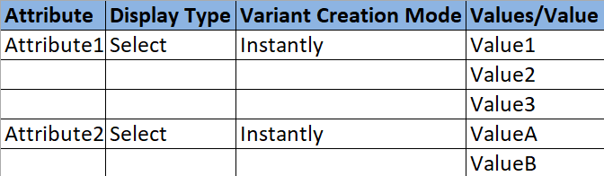

Importar productos¶
La aplicación Ventas de Odoo proporciona una plantilla para importar productos con categorías y variantes. Puede abrirla y editarla con cualquier software de hojas de cálculo como Microsoft Excel, OpenOffice, Google Sheets, entre otros.
Suba esta hoja de cálculo a su base de datos de Odoo una vez que la haya completado correctamente. Una vez arriba, esos productos se agregan al instante y puede acceder a ellos o editarlos desde el catálogo de productos.
Plantilla de importación¶
Para importar productos con categorías y variantes, debe descargar la plantilla de importación de productos. Después de que la haya descargado podrá ajustarla y personalizarla, y luego volverla a subir a su base de datos de Odoo.
Para descargar la plantilla de importación necesaria, navega a . En la página de Productos, haz clic en los «favoritos» en la esquina superior izquierda. Al hacerlo, se revelará un menú desplegable.
En este menú desplegable seleccione la opción Importar registros.

Al seleccionar Importar registros abrirá una página separada con un enlace para descargar la plantilla de importación de productos. Haga clic en ese enlace para descargarla.

Una vez que la descarga de la plantilla haya concluido, abra el archivo de la hoja de cálculo para personalizarla.
Personalizar una plantilla de importación de productos¶
Una vez que haya descargado y abierto la plantilla de importación, es momento de modificar su contenido. Sin embargo, antes de realizar cualquier cambio, hay algunos elementos que deberá tener en cuenta durante el proceso:
Elimine cualquier columna que no considere necesaria, pero le recomendamos ampliamente que no elimine la columna Referencia interna.
Aunque no es obligatorio, en varios casos puede ser muy útil contar con un identificador único (por ejemplo,
FURN_001) para cada producto en la columna Referencia interna. Este incluso puede venir de hojas de cálculo de un software anterior para facilitar la transición a Odoo.Por ejemplo, al actualizar productos importados, puede importar varias veces el mismo archivo sin crear duplicados, lo que mejora la eficiencia y simplicidad de la gestión de productos importados.
No cambie las etiquetas de las columnas a importar. De lo contrario, Odoo no las reconocerá y el usuario tendrá que asignarlas de forma manual en la pantalla de importación.
Si lo desea, puede agregar nuevas columnas a la hoja de cálculo de la plantilla. Sin embargo, para poder agregarlas, esos campos deben existir en Odoo. Si Odoo no logra que el nombre de la columna y un campo coincidan, puede emparejarlos de forma manual durante el proceso de importación.
Durante el proceso de importación de la plantilla completada, Odoo muestra una página con todos los elementos de la hoja de cálculo de la plantilla de producto recién configurada separados por Columna del archivo, Campo de Odoo y Comentarios.
Puede hacer que el nombre de columna coincida con un campo en Odoo de forma manual, solo haga clic en el menú desplegable Campo de Odoo junto a la Columna del archivo que necesita la modificación y seleccione el campo apropiado en ese menú desplegable.
Importar la hoja de cálculo de la plantilla del producto¶
Luego de personalizar la hoja de cálculo de la plantilla de productos, vuelva a la página de importación de productos de Odoo donde está disponible el enlace de descarga de la plantilla. Haga clic en el botón Subir archivo ubicado en la esquina superior izquierda.
Aparecerá una ventana emergente, allí debe seleccionar el archivo con la hoja de cálculo de la plantilla del producto completada para subirlo a Odoo.
Después, Odoo muestra una página con todos los elementos de la hoja de cálculo de la plantilla de producto recién configurada separados por Columna del archivo, Campo de Odoo y Comentarios.

Si es necesario, desde aquí puede asignar de forma manual la columna de archivo a un campo de Odoo.
Para asegurarse de que todo está en orden y que todas las columnas y campos coinciden correctamente, haga clic en el botón Probar ubicado en la esquina superior izquierda.
Si todo está en orden, Odoo mostrará el mensaje Todo parece correcto. en azul en la parte superior de la página para hacérselo saber al usuario.

En casa de que haya errores, Odoo mostrará un cuadro rojo ubicado en la parte superior de la página con instrucciones sobre dónde encontrar los problemas específicos y cómo solucionarlos.

Una vez que haya corregido esos errores, vuelva a hacer clic en Probar para asegurarse de que todos los problemas se han solucionado de forma correcta.
Si necesita subir hojas de cálculo adicionales haga clic en el botón Subir archivo, seleccione la hoja de cálculo de plantillas de productos correspondiente y repita el proceso.
Una vez que todo esté listo haga clic en el botón Importar.
Al hacer clic, Odoo importa de inmediato esos productos y abre la página principal de Productos con un mensaje emergente ubicado en la esquina superior derecha. Este mensaje emergente le informa al usuario cuántos productos se importaron de forma correcta.

Después de este proceso, ahora puede acceder y editar todos los productos recién importados desde la página de Productos.
Importar campos de relación, atributos y variantes¶
Es importante que tenga en cuenta que un objeto de Odoo siempre está relacionado con muchos otros. Por ejemplo, un producto está vinculado a categorías de productos, atributos, proveedores y elementos de esta índole. A estos vínculos o conexiones se les conoce como relaciones.
Nota
Para importar relaciones de productos, primero debe importar los registros del objeto relacionado desde su propio menú de lista.
Campos de relación¶
En los formularios de productos de Odoo hay varios campos que puede modificar y personalizar en cualquier momento. Estos campos están disponibles en cada pestaña de un formulario de producto y, si bien puede editarlos con facilidad desde allí, también puede modificarlos a través de una importación de producto.
Como mencionamos, los campos de relación de esta índole solo se pueden importar para productos si ya existen en la base de datos. Por ejemplo, si un usuario intenta importar un producto con un tipo de producto, solo puede ser uno de los tipos de productos preconfigurados disponibles en la base de datos (por ejemplo, producto almacenable, consumible, entre otros).
Para importar información a un campo de relación en una hoja de cálculo de plantilla de importación de productos, debe agregar el nombre del campo como un título o nombre de columna en la hoja de cálculo. Después, agregue la opción del campo de relación en la línea de producto correspondiente.
Una vez que haya ingresado toda la información en los campos de relación, guarde la hoja de cálculo e impórtela a la base de datos con el proceso descrito con anterioridad ().
Haga clic en Importar una vez que haya subido la hoja de cálculo con la información recién configurada de los campos de relación. Odoo volverá a la página de Productos.
Cuando haya importado y subido los productos recién modificados con la nueva información de los campos de relación, podrá encontrar la nueva información en la página de Productos.
Atributos y valores¶
Odoo también permite que los usuarios importen atributos y valores de productos que podrán utilizar en productos que ya existen en la base de datos o con productos importados.
Para importar atributos y valores es necesario que tenga una hoja de cálculo o archivo CSV separado específico. Además, debe importarlo y subirlo antes de que pueda utilizarlos en otros productos.
Los nombres de las columnas o títulos de la hoja de cálculo de atributos y valores deben ser los siguientes: Atributo, Tipo de visualización, Modo de creación de la variante y Valores / Valor.
Atributo: nombre del atributo (por ejemplo,
TallaoTamaño).Tipo de visualización: es el tipo de visualización que se usa en el configurador de productos y hay tres opciones disponibles:
Opción: los valores aparecen como botones de opción
Selección: los valores aparecen en una lista de selección
Color: los valores aparecen como una selección de color
Modo de creación de la variante: cómo se crean las variantes cuando se aplican a un producto. Hay tres opciones disponibles:
Instantáneo: todas las variantes posibles se crean tan pronto como el atributo y sus valores se agregan a un producto
Dinámico: cada variante se crea solo cuando sus atributos y valores correspondientes se agregan a una orden de venta
Nunca: nunca se crean variantes para el atributo
Nota
No puede cambiar el modo de creación de variantes si al menos un producto ya utiliza el producto.
Valores / Valor: los valores relacionados con el atributo correspondiente. Si el mismo atributo tiene varios valores, entonces deben estar en líneas individuales en la hoja de cálculo.
Una vez que haya ingresado y guardado los atributos y valores necesarios en la hoja de cálculo deberá importarla y subirla a Odoo. Vaya a .
Haga clic en Importar una vez que haya subido la hoja de cálculo con los atributos y valores recién configurados. Odoo regresará a la página de Atributos y desde allí podrá visualizarlos y editarlos.
Como mencionamos, cuando agrega atributos y valores a la base de datos de Odoo puede utilizarlos para productos existentes o importados.
Variantes de producto¶
Cuando configura los atributos y valores del producto en la base de datos puede usarlos en hojas de cálculo para importar productos. Esto le permitirá agregar más información y detalles a los productos que importará.
Para importar productos con atributos y valores debe configurar la hoja de cálculo de la plantilla de importación de productos con columnas específicas como Atributos / Atributo del producto, Atributos / Valores del producto y Nombre.
También puede establecer otras columnas, pero estas son necesarias para importar productos con variantes específicas de forma correcta.

Nombre: nombre del producto
Atributos / Atributo del producto: el nombre del atributo
Atributos / Valores del producto: los valores pertinentes del atributo correspondiente
Truco
Para importar varios valores en la plantilla de importación de productos solo sepárelos con una coma, no con una coma seguida de un espacio. Por ejemplo, muebles,sillón,hogar.
Una vez que haya ingresado y guardado los productos y sus variantes en la hoja de cálculo deberá importarla y subirla a Odoo. Para hacerlo, vaya a .
Haga clic en Importar una vez que haya subido la hoja de cálculo recién configurada con los productos y sus variantes. Odoo regresará a la página de Productos y desde allí podrá visualizarlos.
Para ver y modificar los atributos y variantes de cualquier producto, seleccione el producto correspondiente en la página de Productos y luego haga clic en la pestaña Atributos y variantes.
Ver también